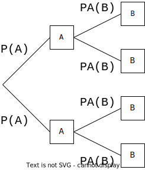

On cherche souvent à analyser la dépendance d'un événement par rapport à un autre, ou bien comprendre des
phénomènes numériques paradoxaux... Les probabilités conditionnelles offrent un cadre simple qui peut aider.
exemple de paradoxe apparent : phénomène de Rogers
Un prof de maths est perçu comme particulièrement sévère : sur les deux groupes d'approfondissement qu'il suit,
composés de quelques élèves,
les moyennes de ce trimestre sont 1, 2, 3, 4 pour le groupe A et 5, 6, 7, 8, 9 pour le groupe B, sur 20. Son
supérieur lui explique qu'il faut impérativement que les moyennes des deux groupes augmentent. Le prof refuse
catégoriquement de changer les moyennes de chaque élève, et dit à son supérieur qu'il n'avait qu'à faire les
groupes différemment pour avoir de meilleures moyennes. Pourquoi ?
Il est donc fondamental de savoir si l'on calcule sur la population globale (\(\Omega\) entier) ou bien si l'on
est restreint à une partie seulement de cette population.
Définition et propriétés
\(A\), \(B\) sont deux événements avec \(P(A)\neq0\).
On note \(P_A(B)\) la «probabilité de \(B\) sachant \(A\)» le nombre \(\displaystyle\frac{P(A\cap
B)}{P(A)}\).
 Représentation des probabilités
conditionnelles sur un arbre
Contrôle qualité :
Une production en très grande série contient 90% de pièces conformes et 10% de pièces défectueuses. Un contrôle
de qualité accepte les pièces conformes dans 92% des cas et rejette les pièces défectueuses dans 94% des
cas.
On tire une pièce au hasard dans la production, après le contrôle qualité.
On note :
\(C\) : «la pièce tirée est conforme» ;
\(A\) : «la pièce tirée est acceptée au contrôle».
Construire l'arbre des possibilités (conseil : mettre les probabilités marginales au premier niveau de
l'arbre).
En déduire les probabilités des 4 issues possibles.
Identifier les faux positifs (pièce refusée bien que conforme) et les faux négatifs (acceptée mais
défectueuse) sur l'arbre
En déduire la probabilité que la pièce prélevée ait subi une erreur de contrôle.
Inverser l'arbre : Construire un arbre dans lequel les événements \(A\) et son
complémentaire sont au 1er niveau, indiquer les probabilités sur chaque branche.
Ce changement de point de vue peut être utile pour mieux analyser une situation.
Approfondissement : En cas de pièce contrôlée et refusée, on fait un deuxième
contrôle, indépendant du premier, qui sera déterminant mais coûte trois fois plus cher.
La situation est-elle améliorée ?
À la suite de la découverte dans un pays A des premiers cas d'une maladie contagieuse non mortelle M, il a été
procédé dans ce pays à une importante campagne de navigation : 70% des habitants ont été vaccinés.
Une étude a révélé que 5% des vaccinés ont été touchés à des degrés divers par la maladie, pourcentage qui s'est
élevé à 60% chez les non-vaccinés.
\(V\) \ \(M\)
\(M\)
\(\overline{M}\)
total
\(V\)
...
...
...
\(\overline{V}\)
total
Calculer la probabilité qu'un individu pris au hasard dans la population ait été touché par la maladie.
Calculer la probabilité pour qu'un individu ait été vacciné, sachant qu'il a été atteint par la
maladie.
Commenter les pourcentages manipulés : peut-on en faire de bonnes/mauvaises interprétations ?
Il est parfois plus judicieux d'essayer d'éviter de présenter des probabilités conditionnelles : on peut
présenter les intersections, qui ont l'avantage d'être immédiatement comparables entre elles, mais il
peut y avoir de gros écarts.
Présenter les données sous la forme d'un tableau à double entrée.
Indépendance
\(A\) et \(B\) sont deux événements de probabilité non nulle.
On dit que \(A\) et \(B\) sont indépendants s'ils vérifient une de ces trois affirmations équivalentes :
\(\begin{array}{cl}
& P_A(B)=P(B) \\
\Leftrightarrow & P(A\cap B)=P(A)\times P(B) \\
\Leftrightarrow & P_B(A)=P(A) \\
\end{array}\) Explication : On passe de la première ligne à la deuxième en multipliant par \(P(A)\) et de la deuxième à
la troisième en divisant par \(P(B)\).
Lorsque \(A\) et \(B\) sont indépendants, \(A\) et \(\overline{B}\) le sont aussi, ainsi que
\(\overline{A}\) et \(B\), et aussi \(\overline{A}\) et \(\overline{B}\).
On a \(P(A)=0{,}4\), \(P(B)=0{,}5\) et \(P(A\cap B)=0{,}2\).
\(A\) et \(B\) sont-ils indépendants ?
En calculant, vérifier si \(\overline{A}\) et \(\overline{B}\) le sont.
Un même individu peut être atteint de surdité unilatérale ou bilatérale (mais pas plus). \\
On note \(G\) et \(D\) les deux événements «être atteint de surdité à l'oreille gauche/droite».
\(G\) et \(D\) sont indépendants, et \(P(G)=P(D)=5\%\). On note :
\(B\) : «surdité bilatérale» ;
\(U\) : «surdité unilatérale» ;
\(S\) : «surdité» (une oreille au moins).
Calculer les probabilités de ces événements.
Sachant qu'un individu pris au hasard dans la population est atteint de surdité, quelle est la
probabilité pour qu'il soit atteint de surdité à droite ? Pour qu'il soit atteint de surdité bilatérale
?
Partitions
Formule des probabilités totales :
Soit \(C_1, C_2, \ldots,C_k\) des événements de probabilité non nulle formant une partition de \(\Omega\)
(tous les \(C_i\) sont disjoints et recouvrent entièrement \(\Omega\) : ils représentent des cas différents).
Alors, on a :
\(P(A)=P(A\cap C_1)+P(A\cap C_2)+\cdots+P(A\cap C_k)\)
Qui peut aussi s'écrire :
\(P(A)=P(C_1)P_{C_1}(A)+P(C_2)P_{C_2}(A)+\cdots+P(C_k)P_{C_k}(A)\)
Si \(B\neq\emptyset\), \(B\) et \(\overline{B}\) formant naturellement une partition de \(\Omega\), on a :
\(P(A)=P(B)P_{B}(A)+P(\overline{B})P_{\overline{B}}(A)\)
On lance un dé tétraédrique (4 faces) bien équilibré : on multiplie le résultat \(R\) par 2 s'il est pair. On
lance ensuite une pièce bien équilibrée ; dans le cas pile, on multiplie \(R\) par 2.
Utiliser un arbre pour déterminer la loi de \(R\) (dire où apparaît une partition) et calculer son espérance et
son écart-type.
Problèmes
Par groupe de 3 maximum, présenter un des exercices suivants :
Pierre feuille ciseaux
Alice et Bob jouent à pierre/feuille/ciseaux. On considère que tous les tirages sont indépendants et
équiprobables.
Représenter la situation par un arbre ou un tableau.
Déterminer les probabilités que Alice gagne, que Bob gagne, ou d'un match nul.
Alice a vu sur internet que jouer pierre donne de meilleurs résultats. Elle l'utilise donc 50% du temps
contre 25% du temps pour les deux autres. Bob ne change pas de stratégie.
Mêmes questions qu'au A.
Paradoxe du Duc de Toscane
On lance trois dés à 6 faces bien équilibrés et on note la somme S des deux nombres obtenus. Le Duc de
Toscane, dans une lettre à Galilée, signale :
Pourtant, en pratique, S=10 est obtenue plus souvent ! Y a-t-il une explication ?
Paradoxe de Monty Hall (présentateur du jeu TV «let's make a deal»).
Un candidat se trouve devant 3 portes fermées. Derrière une de ces portes, il y a une superbe voiture à
gagner,
et un poireau dans les deux autres. Le candidat doit choisir une porte au
hasard (sans l’ouvrir). L’animateur ouvre alors une autre porte contenant un
poireau.
Que devrait faire le candidat : garder la porte qu'il a choisie ou changer d’avis et choisir
l'autre porte restante ? Justifier.
Conseils : Essayer de représenter la situation par un arbre ; réfléchir à ce qu'il se
passerait s'il y avait 100 portes (une voiture et 99 poireaux).
Problème des partis
On date le
début de la théorie des probabilités de la correspondance entre Blaise Pascal et Pierre de Fermat (1654) à
propos du «problèmes des
partis» :
Deux joueurs jouent à un jeu de hasard en 3 parties gagnantes, chacun ayant misé la même somme d'argent
\(m\) ; or il se trouve que le jeu est interrompu avant que l'un des deux joueurs ait obtenu 3 victoires et
ainsi remporté la victoire et de ce fait la totalité des enjeux soit \(2m\). Comment, dans ces
circonstances, doit-on partager les enjeux ?